인공신장실
구리시 인공신장실 고를 때 확인할 6가지 기준
투석기 기종, HDF, 투석용수, 정전 대비, 의료진, 야간 운영 — 오래 다닐 병원을 고르는 체크리스트.

구리·다산·남양주·중랑구 환자분들이 진료실에서 가장 자주 묻는 질문을 신장내과 전문의의 관점에서 정리했습니다.
개인의 상태에 따라 다를 수 있으므로 진료 시 상담해 주세요.
투석기 기종, HDF, 투석용수, 정전 대비, 의료진, 야간 운영 — 오래 다닐 병원을 고르는 체크리스트.
저녁 시간대 투석의 장단점, 신청 방법, 남양주·구리 직장인 환자가 자주 묻는 질문.

확산과 대류의 차이, HDF가 저혈압·피로·요독 증상에 도움이 되는 이유, 비용.

동정맥루가 필요한 이유, 매일 확인할 것, 하지 말아야 할 것, 막혔을 때 대처.
투석 간 체중 증가 기준, 칼륨·인이 많은 음식, 여름철 수분 관리 요령.
항원·항체 검사 해석, 투석 환자에서 항체가 잘 생기지 않는 이유, 인공신장실 감염 관리 원칙.
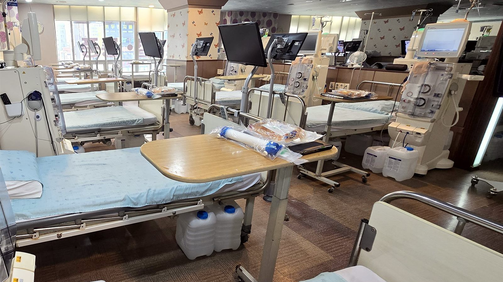
본인부담 10%가 되는 산정특례, 의료급여, 본인부담상한제, 신장장애 등록까지.
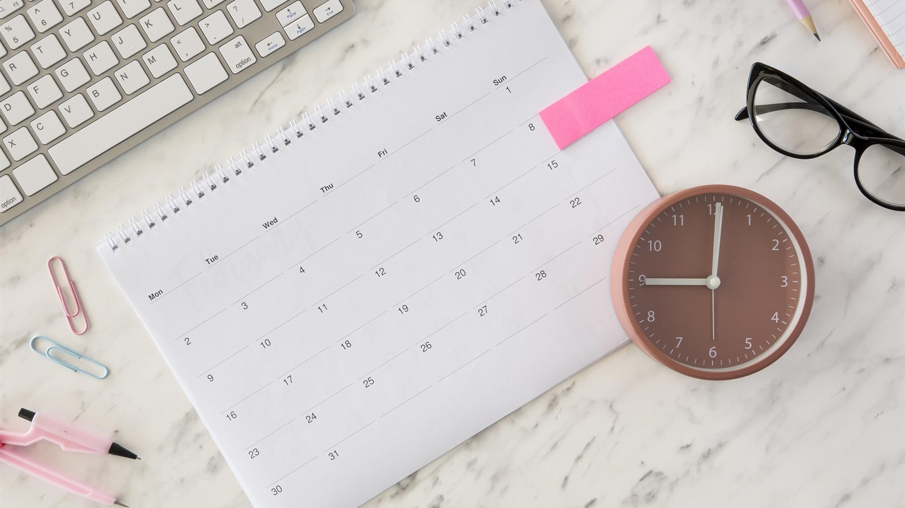
eGFR 15의 의미, 요독 증상·고칼륨·부종 등 시작 신호, 동정맥루를 미리 만들어야 하는 이유.
원리·빈도·감염 위험·식사 자유도 비교표와 방식별로 잘 맞는 환자 유형.

필요 서류와 예약 절차, 명절 연중무휴 투석, 해외여행 준비까지.
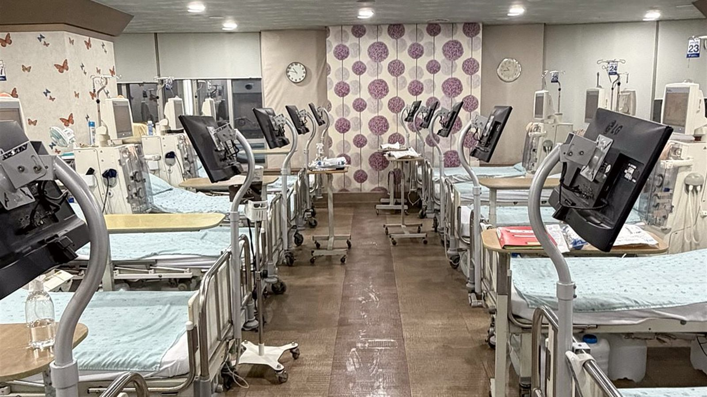
어지러움·쥐가 나는 이유, 체중 증가 5% 규칙, 건체중 재평가(BCM)와 HDF의 역할.
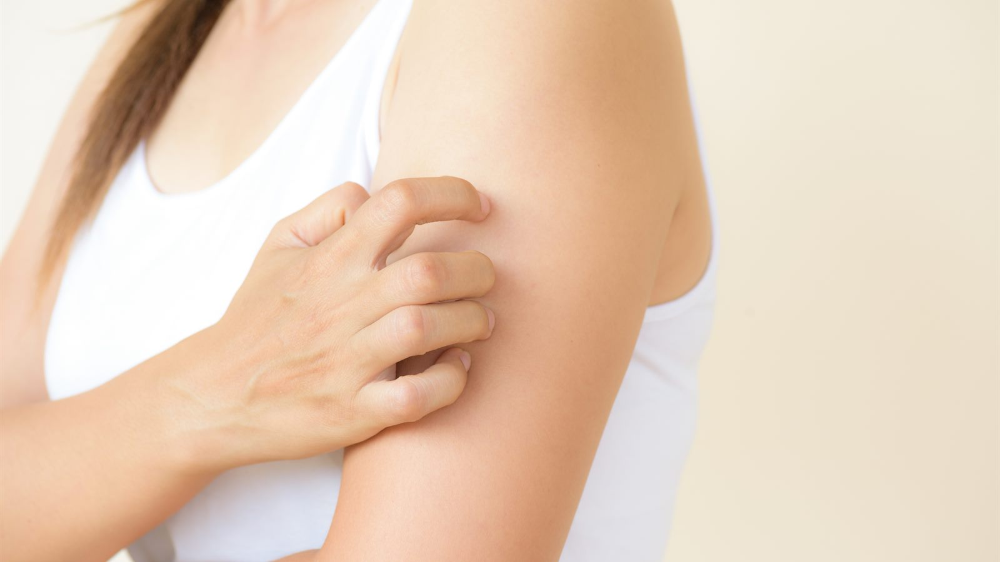
요독성 소양증의 원인(인·PTH·건조), 보습 요령, 투석 적절도와 HDF, 약물 치료.
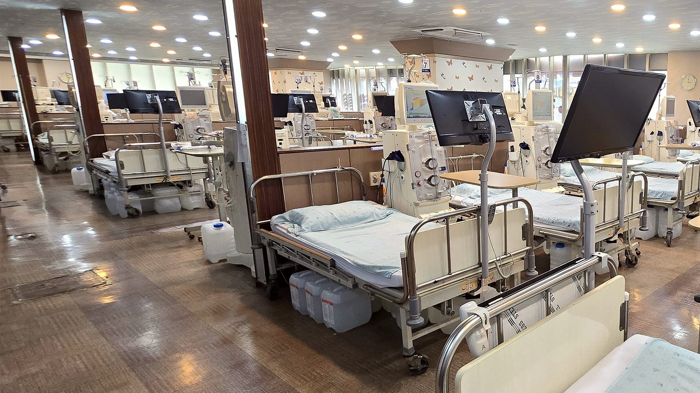
조혈호르몬(EPO) 부족이 원인인 신장성 빈혈, 조혈제 주사와 철분 보충, 목표 수치.
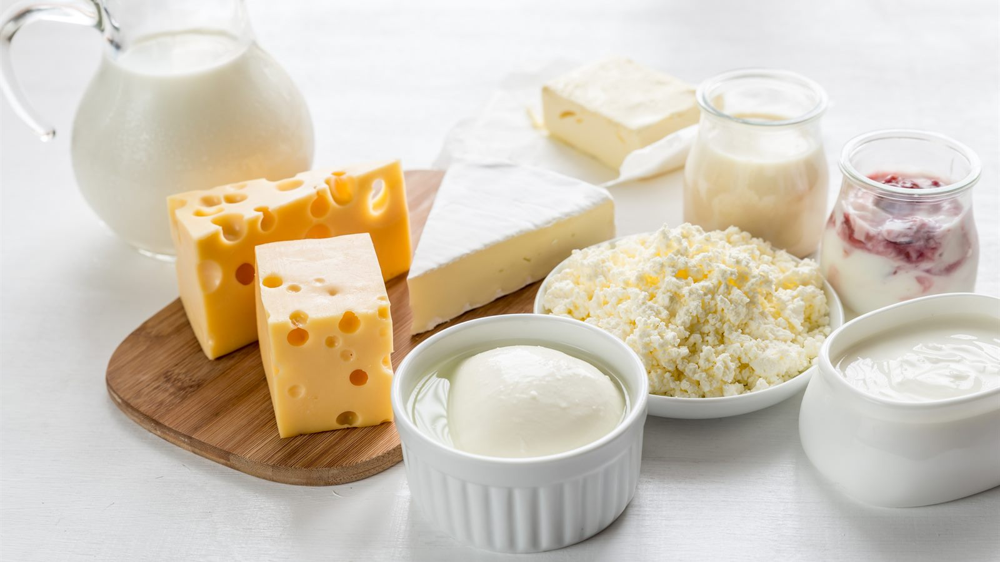
혈관 석회화를 부르는 인, 가공식품 인산염의 위험, 인결합제를 식사와 함께 먹는 이유.
사구체여과율로 나누는 단계, 각 단계의 목표와 검사 주기, 투석 준비 시점.

혈뇨와 단백뇨의 의미, 일시적 원인과 콩팥병 신호의 구분, 어떤 검사를 받아야 하는지.
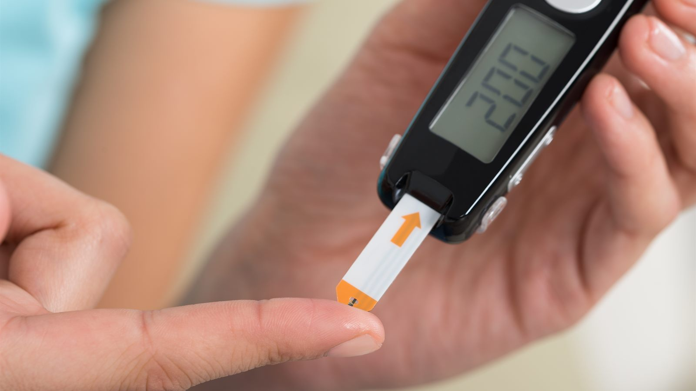
말기콩팥병 원인 1위 당뇨병, 2위 고혈압. 콩팥 합병증을 조기에 찾는 검사와 목표 수치.

정상 범위와 근육량의 함정, eGFR 읽는 법, 수치가 갑자기 올랐을 때 확인할 것.
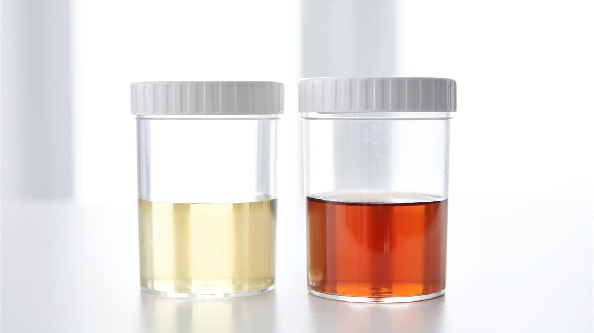
붉은색·콜라색·뿌연 소변의 의미, 단백뇨 거품 구분법, 음식·약 때문인 경우.
부정맥을 부르는 고칼륨혈증, 과일·채소 주의 목록, 데치고 담가 칼륨 줄이는 조리법.
NSAIDs와 3중 조합의 위험, 조영제 검사 전 준비, 콩팥병 환자의 약 습관 3가지.
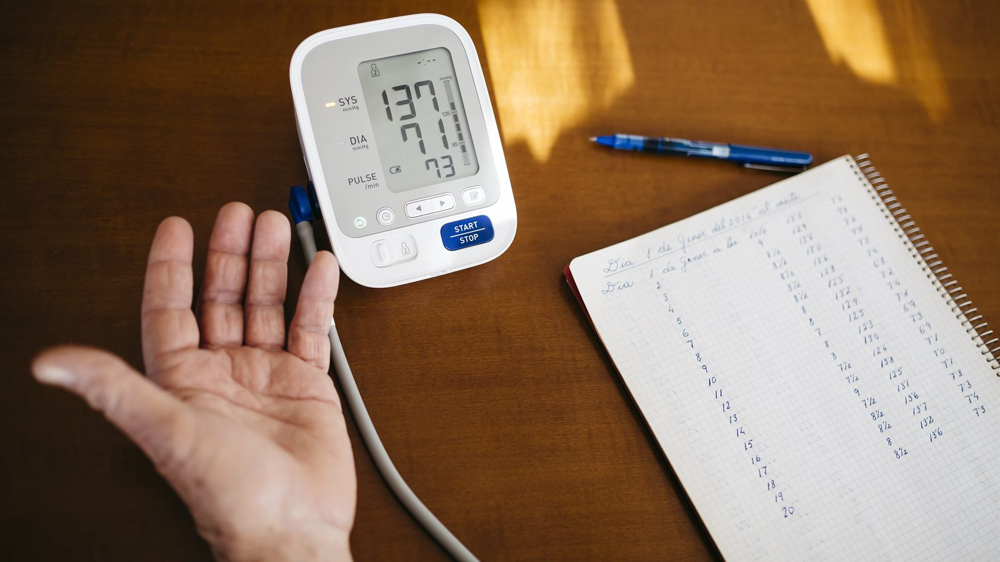
측정 시간과 자세, 진료실 혈압과 다른 기준(135/85), 백의 고혈압과 가면 고혈압.
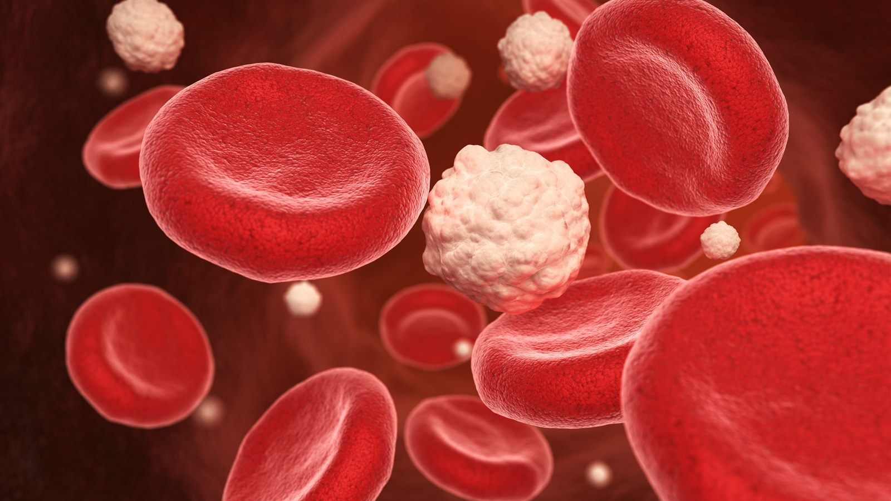
LDL 목표 수치, 만성콩팥병 환자의 사망 원인 1위가 심혈관 질환인 이유, 근육 부작용.

요산 목표 6.0mg/dL, 급성 발작 대처, 콩팥 기능에 따른 약제 선택, 요산 결석.
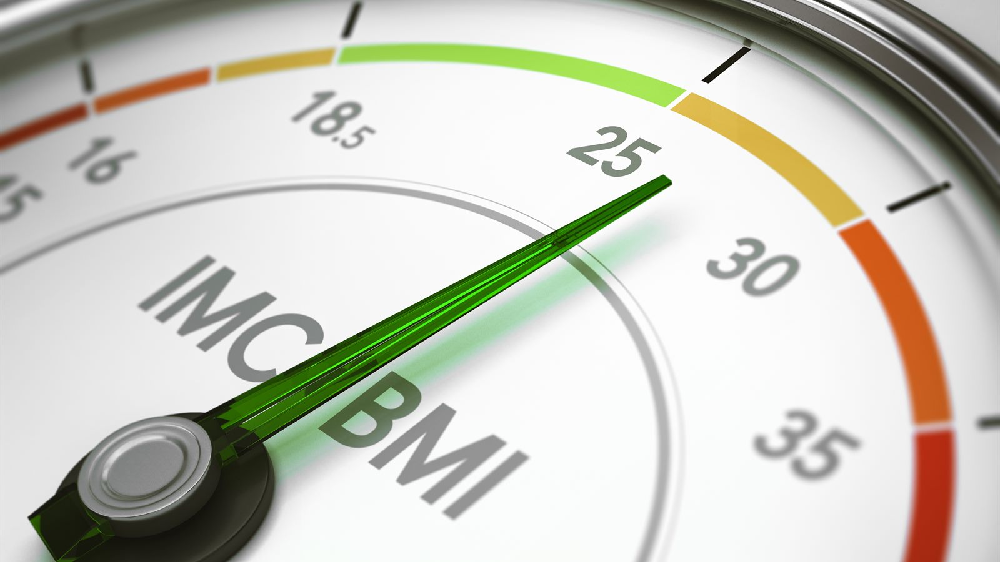
GLP-1 계열의 신장 보호 효과와 탈수·급성신손상 주의점, 중단 후 체중 재증가.
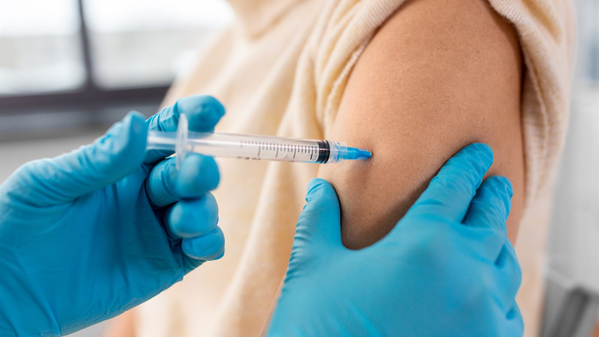
감기와 독감의 차이, 10~11월 접종 이유, 폐렴구균 백신 병행.

포진후신경통, 2회 접종 일정, 항바이러스제의 신기능 용량 조절.
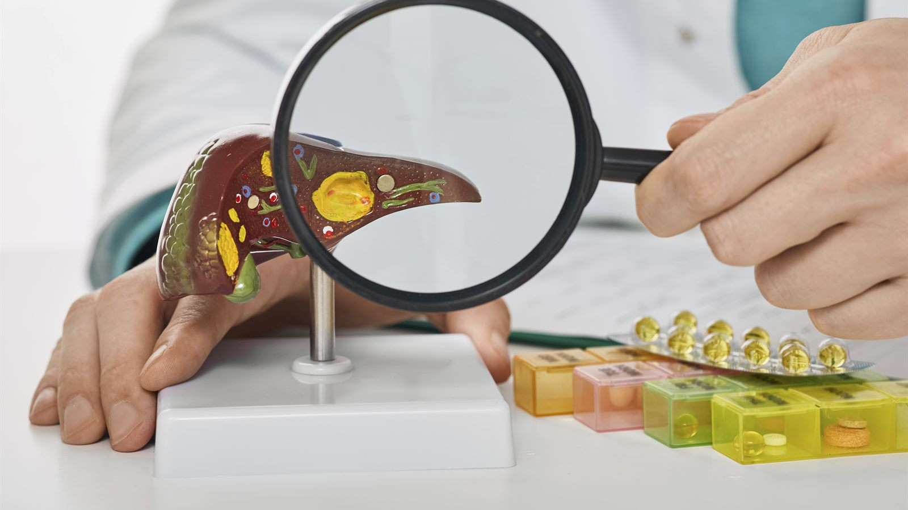
감염 경로와 증상, 항체 검사가 필요한 연령, 2회 접종 일정.

흉선 펩타이드의 작용 원리, 1회·8회 시행, 투석 환자의 면역 관리에서의 위치.

결핍 기준과 검사, 3~6개월 간격 투여, 만성콩팥병에서 활성형 비타민D가 필요한 이유.
더 많은 글은 조형도내과의원 네이버 블로그에서 보실 수 있습니다.
구리 · 다산 · 남양주 · 중랑구 투석 환자를 위한 인공신장실
처음 투석을 시작하는 분, 다른 병원에서 옮기는 분, 낮 시간 투석이 어려운 직장인 모두 상담 가능합니다.